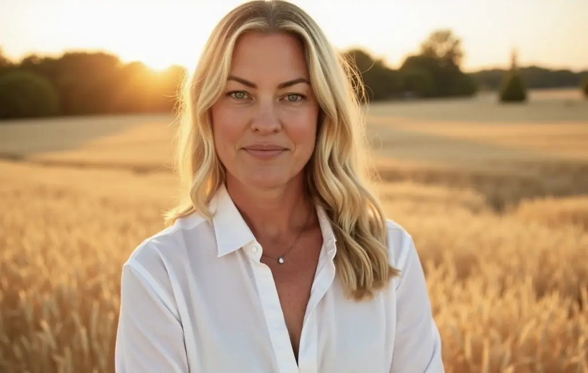
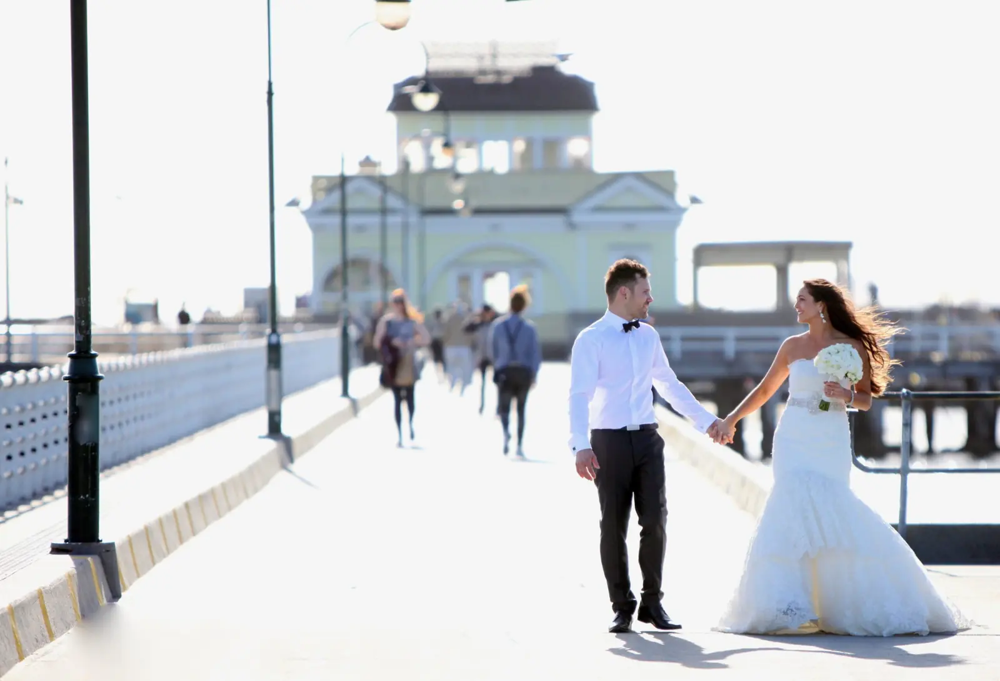
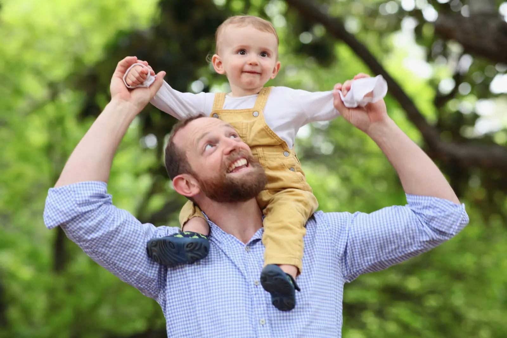
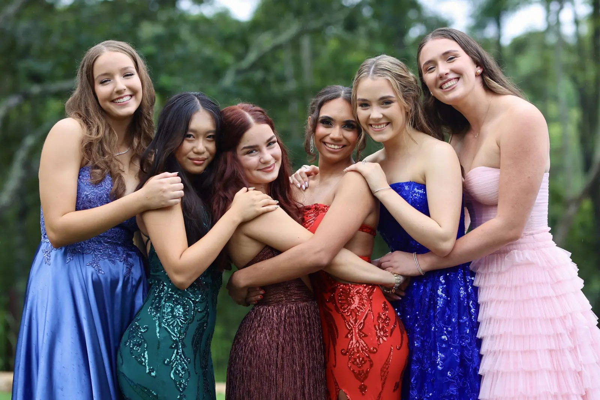
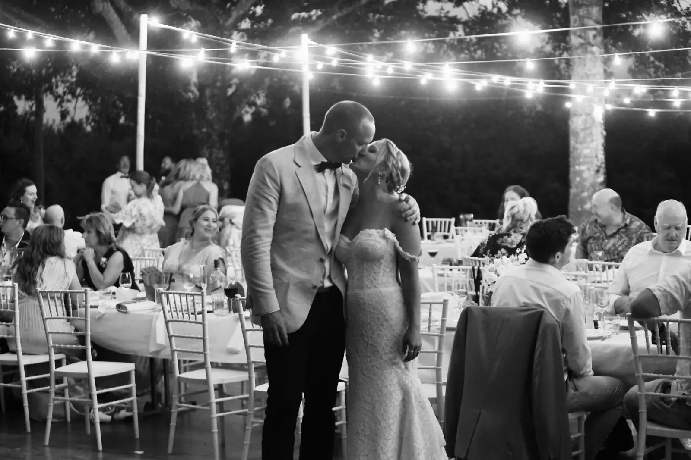
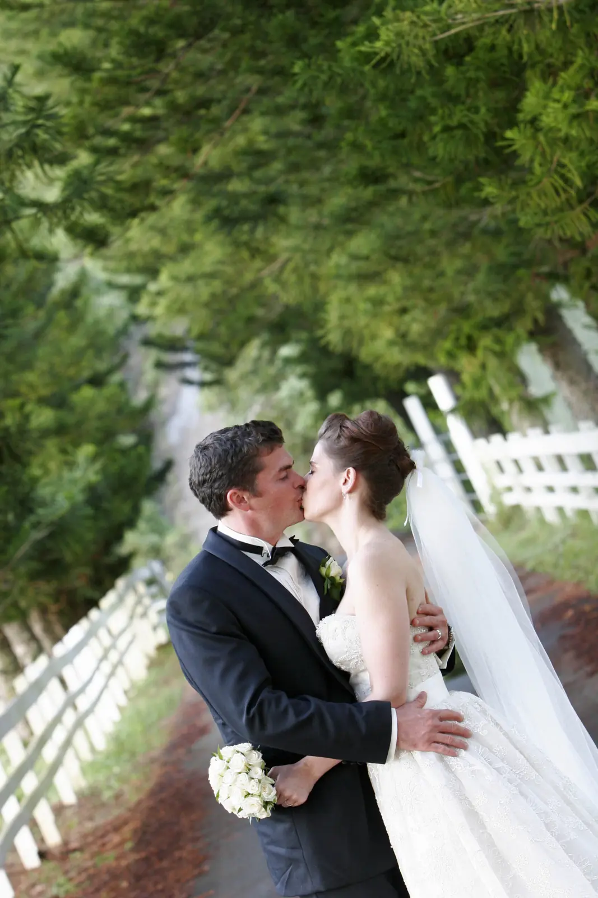

Candid
The unscripted laughs, the happy tears, the glance across the room. I watch closely so the real moments are never missed.
Choosing your photographer is like choosing a companion for an important moment in time. So it’s only fitting that I share a little about myself.

For sixteen years I’ve been immersed in photography, mostly weddings across Victoria and the east coast of Australia.   

(02) · Before the camera
Before photography, I had the privilege of witnessing countless weddings as a wedding planner. It taught me to anticipate raw emotion and capture it as it unfolds naturally.
Photographing a wedding feels like being gifted a front-row seat to precious moments in time. I become completely absorbed, my eyes never leaving you and the beauty unfolding around you, so no detail is overlooked.
A contemporary style with a relaxed approach, because the best photos come from genuine, authentic moments.
The unscripted laughs, the happy tears, the glance across the room. I watch closely so the real moments are never missed.
Even people who “hate photos” end up enjoying it. I create an atmosphere where you can simply be your most natural selves.
Venue walk-throughs, timelines and weather plans. The quiet organisation that lets you let go and enjoy your day.
Beyond the lens, life is fuelled by three energetic children who keep me on my toes, my supportive husband and our adorable fur baby, Rocky.
“…allowing me to just let go of the running sheet in my head and enjoy my day, because I knew that you were taking care of it.”

If you’re looking for a photographer who captures every moment and creates lasting connections, I’d be honoured to be part of your journey.
Now booking 2027 weddings & sessions
Four quick steps. You’ll see the right package and price before you send a thing, and Katherine replies to you personally.